Material de vidrio calibrado volumétrico
Pipeta
tubo alargado de vidrio o plastico para la transferencia de liquidos pueden ser desechables para no probocar contaminacion crusada
tranferencias de liquidos sin precision
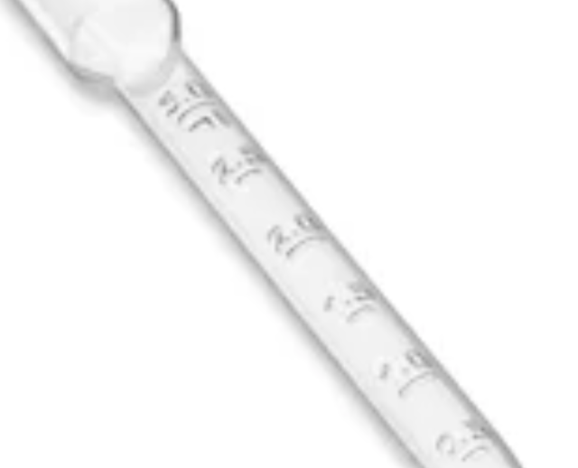 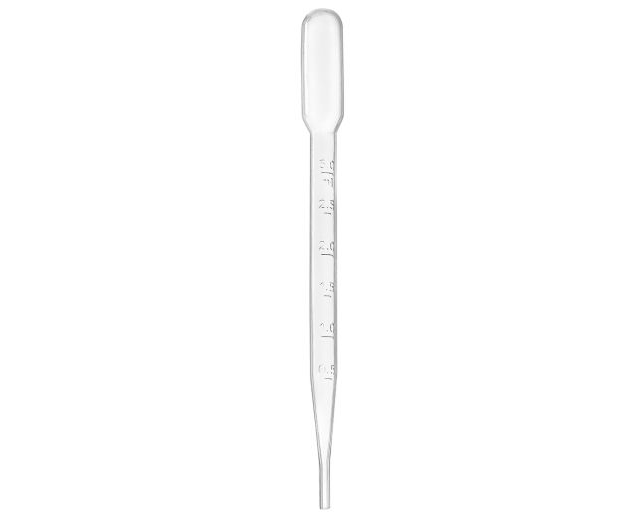 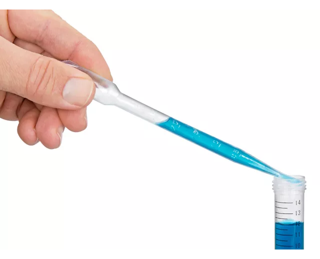{kind=link}
{kind=link}
{kind=link}
Pipeta graduada
un tubo alargado de vidrio o plastico con su volumen graduado para hacer tranferencias de liquidos precisas
transferencia de volumenes de liquidos de manera precisa
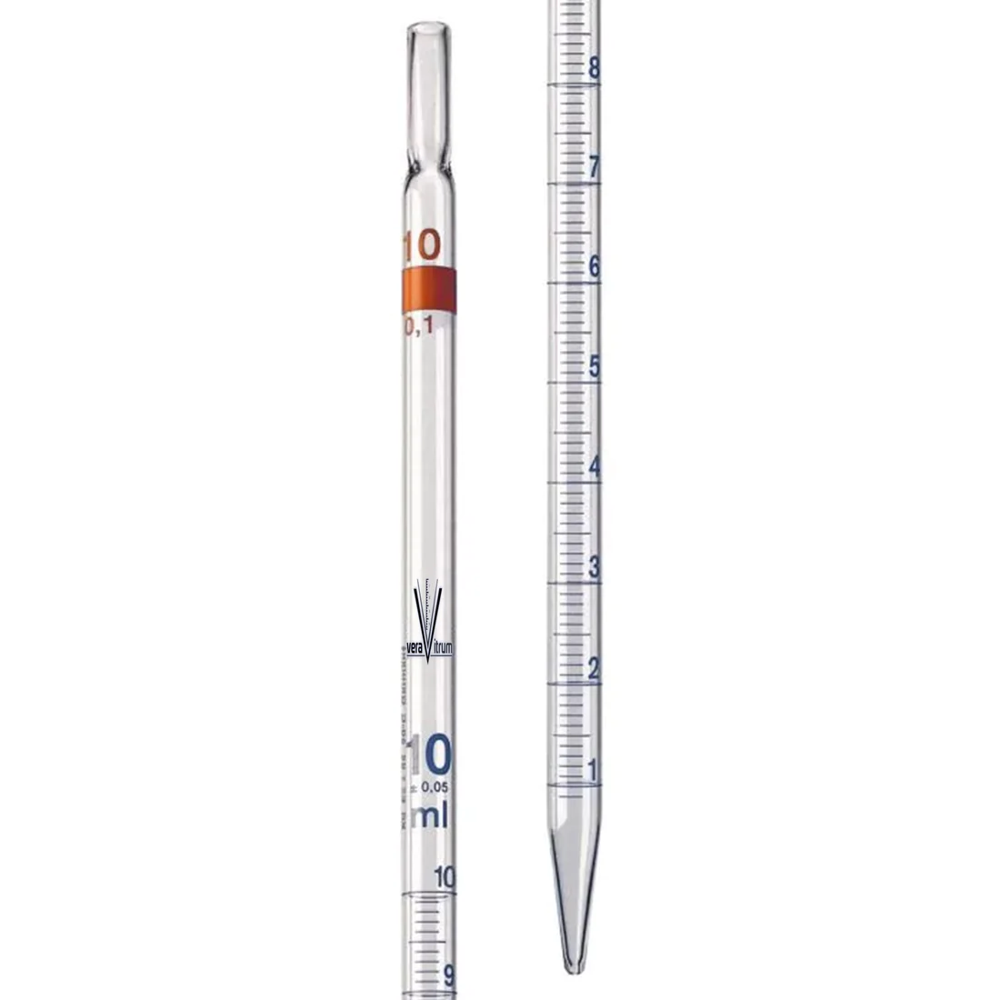{kind=link}
Matraz aforado
botella de vidrio con una base anchanda y un cuello delgado y largo tiene una medicion en la botella que es la capacidad del matraz
se usa para medir de manera precisa un volumen de un liquido
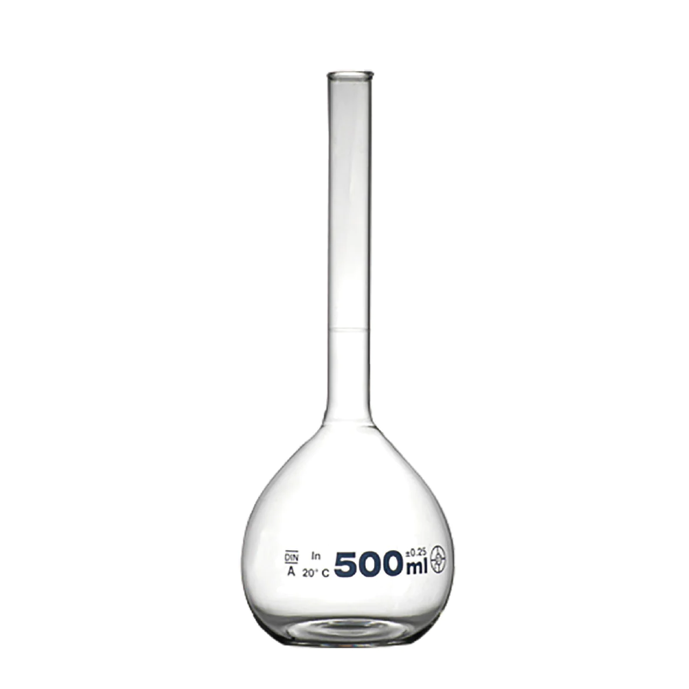{kind=link}
Probeta
frasco de vidrio graduado que se asemeja a un tubo
se usa para medir volumenes de liquidos de manera aproximada
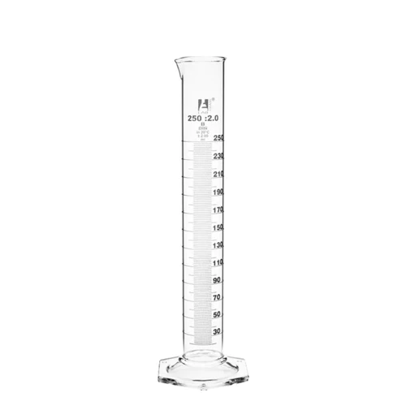{kind=link}
Bureta
tubo de vidrio graduado en la parte inferios tiene una valvula que permite que el liquido fluya de manera controlada y continua con un tubo capilar
se usa para separar liquidos de diferentes dencidades o tranferir un volumne de manera precisa
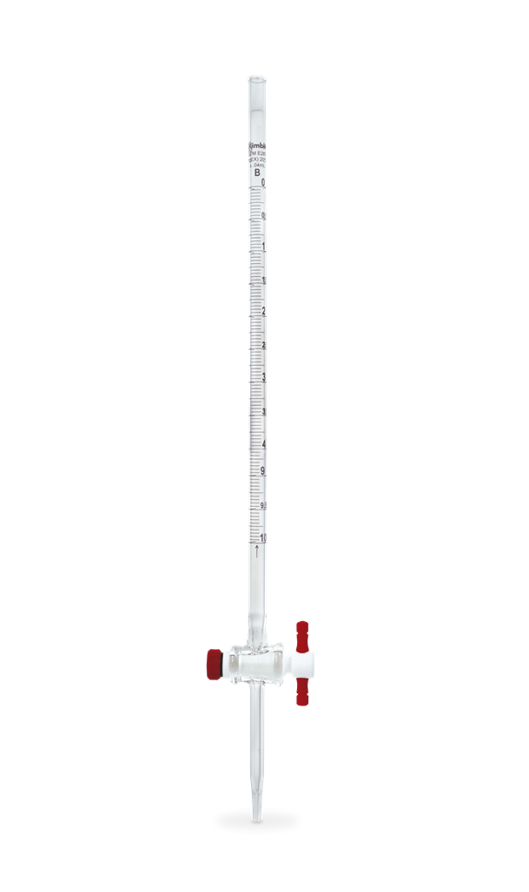{kind=link}
Material no calibrado
Vaso de precipitado
es un recipiente cilindrico de vidrio con fondo plano con una graduacion inexacta
se usa para prepara, calentar sustancias, medir o tranferir liquidos
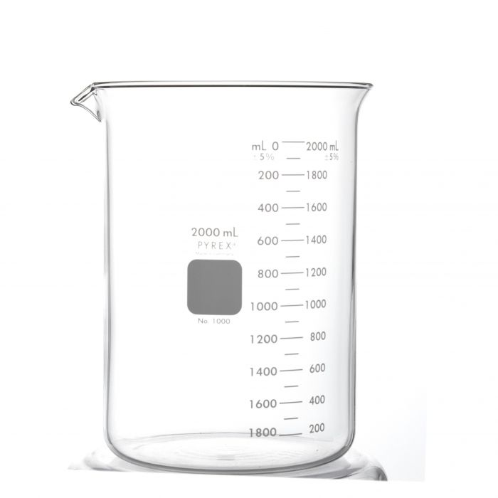{kind=link}
Tubo de ensayo
pequeño tubo de vidrio con fondo cerrado y redondeado
se utiliza para contener pequeñas cantidades de liquidos o sustancias tambien se usa para mezclas o reaciones en pequeña escala

Vidrio de reloj
lamina de vidrio circular y cóncava-convexa o como un bol
se usa para medir la masa o peso de pequeñas muestras o para evaporar los liquidos de las mismas, tambien se usa como tapa para vasos precipitados
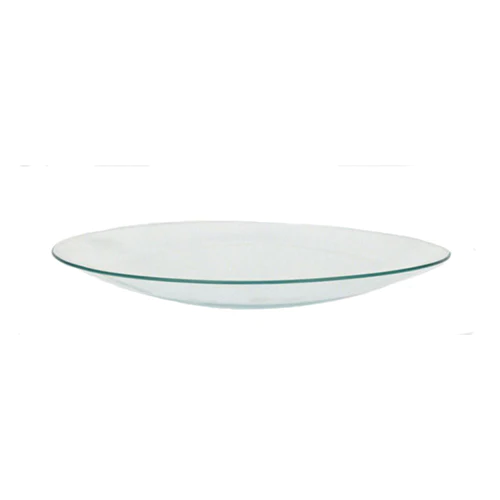{kind=link}
Varillas de vidrio
es un fino cilindro de vidrio
sirve para agitar soluciones o sustancias
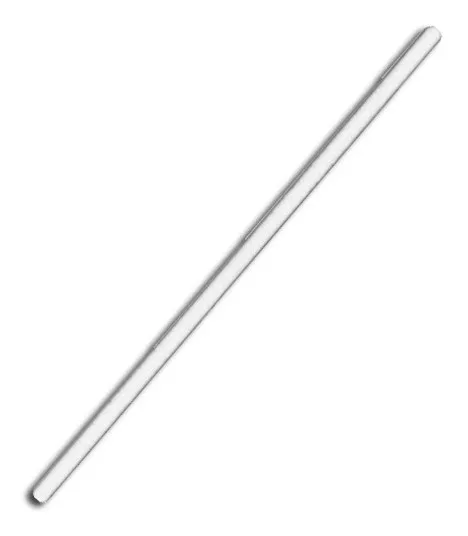{kind=link}
Frasco de lavados o pisetas
es un frasco cilindrico con una tapa que contiene un tubo flexible
se usa para dirigir un solvente o agua destiada a un objetivo
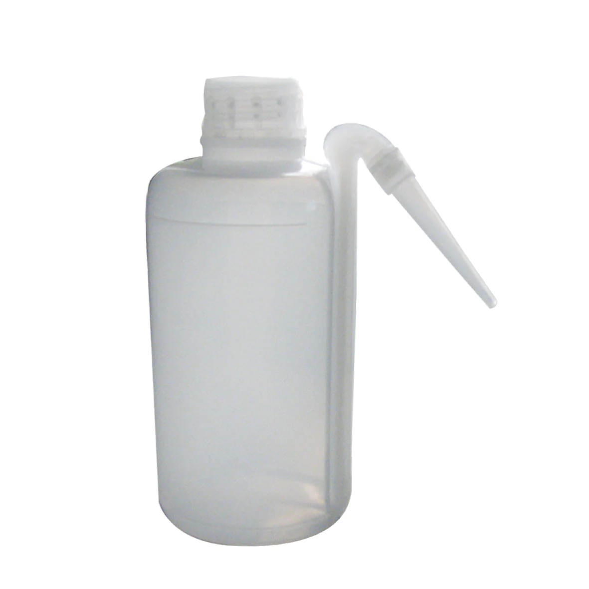 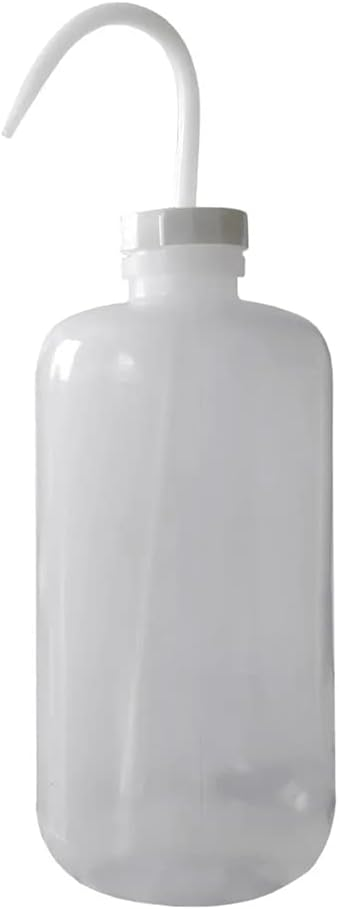{kind=link}
{kind=link}
Embudo
utencilio con forma conica suele tener un tubo delgado por salida
se usa para verter liquidos o sustancias en otro contenedor sin deramarlos
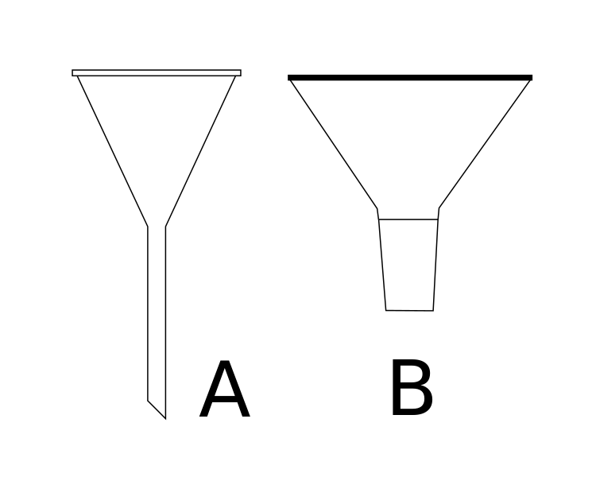{kind=link}

Matraz Erlenmeyer
Matraz balón
Cristalizador
Matraz Kitasato
Ampolla de decantación
Tubo Refrigerante de destilación
Pesafiltro
Material de hierro o bronce
Pinza de Mohr Pinza Fischer Pinzas mariposa Soporte universal Aro metálico Pinzas y agarraderas Gradillas Tela metálica con amianto Trípode Espátula Nuez Mortero de hierro Cuchara de combustión
Material de porcelana
Cuchara espátula Mortero y pilón (pistilo) Cápsula Crisol Crisol de capa filtrante Crisol de Gooch Triangulo de pipa Embudo Büchner Desecador de vidrio con tapa y placa de porcelana